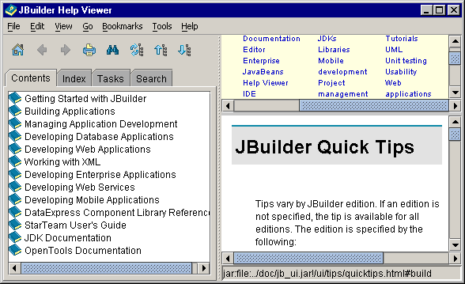

Accessing help documentation
You have several options to access help documentation:
- Help|Help Topics — standalone Help Viewer
- Help — submenus for access to reference documentation, JBuilder samples, release notes, and other information about JBuilder
- Help button in dialog boxes and wizards — help specific to dialog box or wizard
- F1 — context-sensitive help
The Help Viewer opens as a standalone window by default, but you can open it within the IDE by choosing Embedded Help from the Help page of the Preferences dialog box (Tools|Preferences|Help).
The Help Viewer includes many functions:
- To open a book and view its contents, double-click a book icon, or press the right arrow key on the keyboard. Use the mouse or up and down arrow keys to select a topic for viewing.
- To search online documentation, click the Index or Search tab, or to view a comprehensive list of common tasks, click the Tasks tab.
- To copy text, search text, set bookmarks, add content pane tabs, and much more, investigate the main menu and toolbar options.

For more information, see:
Getting Started with JBuilder: Using JBuilder's online help
Getting Started with JBuilder: Learning more about JBuilder